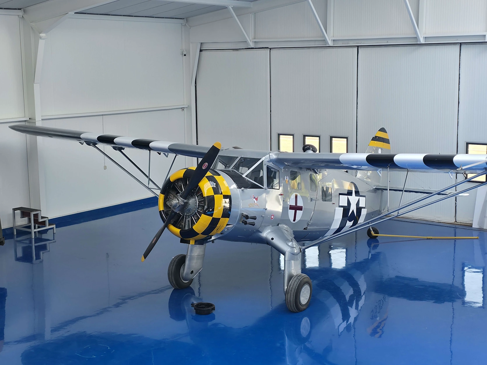
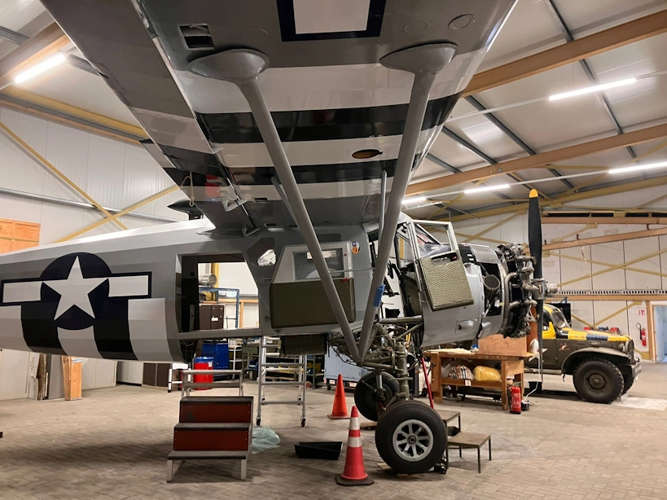

Noorduyn Norseman
Beschrijving
Ik ben sinds 2020 actief als vrijwilliger voor het Nederlands Transport Museum. Daar voerde ik verschillende taken uit, waaronder sleutelen aan het Noorduyn Norseman vliegtuig dat onderdeel was van de collectie. Nadat het museum in 2023 haar deuren sloot, ben ik actief gebleven als vrijwilliger voor de stichting Noorduyn Norseman. Het doel van de stichting is om het toestel weer naar een luchtwaardige staat te repareren.
Mijn bijdrage
De grootste bijdrage die ik heb geleverd aan het project is het lakken en plakken van stukken van het Ceconite-doek dat grote delen van het vliegtuig bedekt. Daarnaast heb ik veel aan de montage en het afstellen van het staartstuk gewerkt en nog enkele onderdelen rond de cockpit ontworpen en gemonteerd.
De tekening hierboven heb ik zelf gemaakt.

